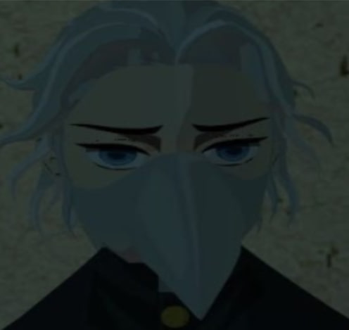
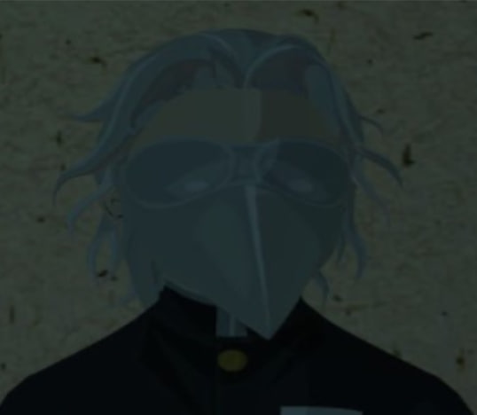

Маски «Небесная твердь»
Маски позволяют скрыть личность, защитить себя на заданиях и мероприятиях. Создавать их не обязательно, но если хочешь — следуй порядку действий.
Основные правила создания масок
- Каждое действие необходимо строго отыгрывать через /me, /do, /try (1 действие = 5 отыгрышей).
- Выбери материал для маски: дерево, глина или бамбук.
Дерево
- Найти подходящее дерево в лесу и срубить его, убедившись, что нет гнили или трещин.
- Обработать древесину в мастерской с использованием инструментов.
- Сушить, разметить места резьбы, вырезать маску и покрыть краской или защитным слоем.
Глина
- Собрать сырую глину из водоёма, приготовить крепеж из дерева или бамбука.
- Сформировать форму маски, закрепить её деревянными/бамбуковыми палочками.
- После просушки обработать наждачной бумагой и покрасить.
Бамбук
- Найти крепкие бамбуки, разрезать и обработать, разметить конструкцию.
- Скрепить детали клеем или верёвкой, убедиться, что маска стабильна.
- Обработать защитным покрытием или краской, оставить сушиться.
Использование масок
- Можно носить только на заданиях и мероприятиях, запрещено в штабе.

